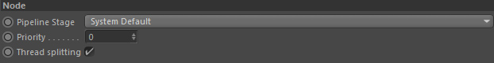
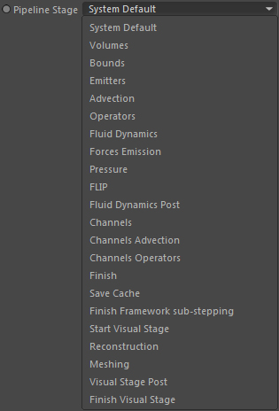

Node

Pipeline Stage

Specifies in which pipeline stage this node is executed.
Please see the Pipeline Viewer for more information on the Effex pipeline.
The default value is 'System Default' which is the stage
that fits most the algorithmic nature of the corresponding node. This is totally node dependant.
Volumes for example are in the first stage because they are kind of a basic structure that is used
by other nodes. So it makes sense they are generated at the very beginning.
However, each algorithm has its own order of execution for certain
functionalities to create a special effect. Same as you use deformer on meshes in a certain order to create that specific look.
Priority
As all nodes are evaluated in a certain order
you can control which nodes inside a single pipeline stage are executed before/after other nodes.
To control the execution order you can use the priority. Lower values mean earlier and higher values mean later in the stage.
You can check the pipeline order in the Pipeline Viewer dialog.
Thread splitting
Imagine two nodes in the same pipeline stage.
Node A is executed before Node B. Node B requires information from Node A to do what it does.
Now when several CPU threads are working for a node
and the first thread is finished doing its stuff, it should wait for the other threads
to finish their Node A jobs.
Once all threads are finished working for Node A, Node B can be executed. This makes sure
that Node B has access to the latest and complete information of Node A.
This we call thread splitting.
Some other nodes however may not require information from a previous node.
In that case, turning off thread splitting can result in a performance gain
as the threads will not wait before they start working on Node B.